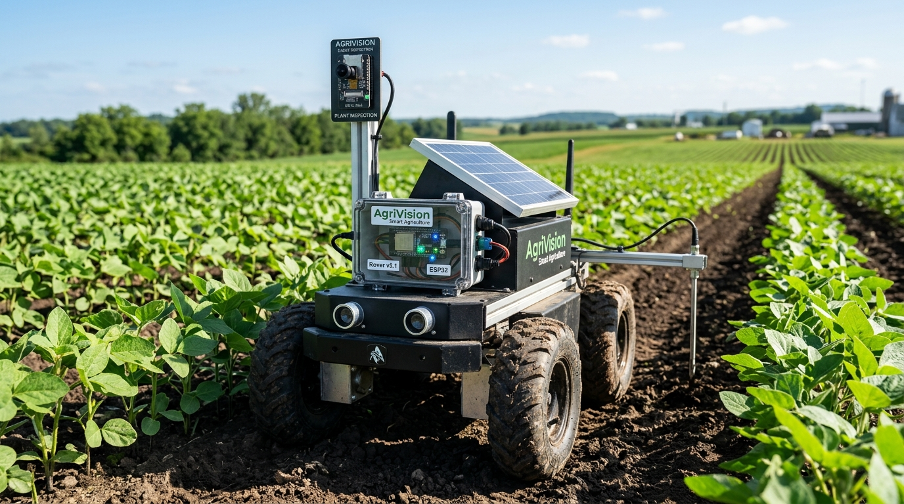

Robotics Engineering & Spatial CAD
AgriVision Autonomous Agricultural Rover — 3D Architecture
Interactive 3D model and physical chassis architecture of the AgriVision Rover. Rotate, inspect individual sensor subsystems, examine ground clearance, and explore the agricultural sensor payload.
CHASSIS PLATFORM
4WD Rocker-Bogie
DRIVE SYSTEM
4x DC High Torque
PAYLOAD CAPACITY
3.5 kg Field Kit
Real-World Agricultural Deployment
AgriVision Rover Field Prototype & Operational Layout
Designed specifically for agricultural row-crop surveillance and microclimate observation. The rover navigates between crop rows without disturbing root systems, measuring ambient atmospheric conditions and subsurface soil hydration in real time.
✓
All-Terrain Rocker Suspension: Absorbs vibrations and uneven furrows in tilled soil and clay.
✓
Obstacle Echo Navigation: Dual ultrasonic transducers detect crop stalks, irrigation pipes, and field fences.
✓
Subsurface Moisture Probe: Extending capacitive sensor measures volumetric water content directly at the root zone.
✓
Live Video Surveillance: Elevated camera mast provides real-time crop disease inspection and visual canopy tracking.

Figure 1.0: AgriVision Autonomous Rover deployed in crop field with ESP32-CAM vision and telemetry suite.
Engineering Specifications & Dimensions
AgriVision 2.0 Mechanical and Electrical Parameters
| Parameter | Specification | Function / Notes |
|---|---|---|
| Dimensions (L × W × H) | 280 mm × 220 mm × 195 mm | Compact form factor to fit within standard crop furrow spacing (300mm). |
| Chassis Material | Laser-cut Acrylic & 3D-Printed ABS | Weather-resistant, lightweight, and electrically non-conductive. |
| Ground Clearance | 65 mm | High clearance avoids wet mud clods and agricultural mulch. |
| Drive Actuators | 4× 12V High-Torque Geared DC Motors | Operating through L298N Dual H-Bridge with PWM speed control. |
| Power Source | 3S 18650 Li-ion Battery (11.1V Nominal / 12.6V Peak) | 2600 mAh capacity providing 3.5+ hours continuous field telemetry. |
| Auxiliary Solar Harvester | 6V 2W Monocrystalline Panel | Trickle charging buffer for microcontrollers during outdoor daylight operation. |
| Communication Range | 150 meters (SoftAP) / Unlimited (Blynk Cloud) | Wi-Fi 802.11 b/g/n 2.4GHz with internal PCB trace antenna. |